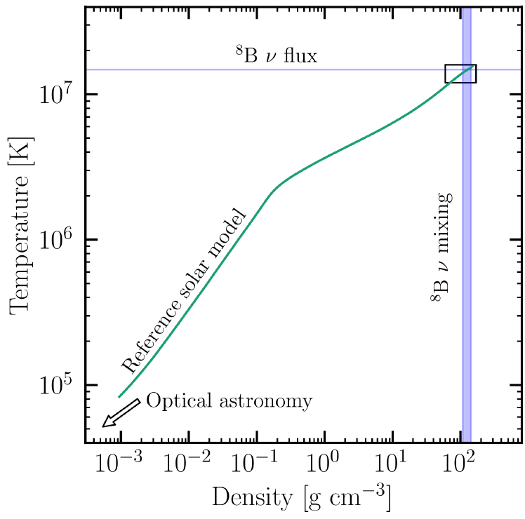

<!-- To show an image, use the  tag. Example: -->


<div class="projects-list">
    <section class="project">
        <h2>Solar Neutrino Phenomenology</h2>
        
        <p>
            Brief description of Project 1. Highlight the main features, technologies used, and what makes it interesting.
        </p>
        <a href="https://example.com/project1" target="_blank" rel="noopener">Learn more</a>
    </section>

    <section class="project">
        <h2>Project Title 2</h2>
        
        <p>
            Brief description of Project 2. Explain its purpose, your role, and any notable outcomes.
        </p>
        <a href="https://example.com/project2" target="_blank" rel="noopener">Learn more</a>
    </section>

    <section class="project">
        <h2>Project Title 3</h2>
        
        <p>
            Brief description of Project 3. Mention any challenges faced and how you solved them.
        </p>
        <a href="https://example.com/project3" target="_blank" rel="noopener">Learn more</a>
    </section>
</div>